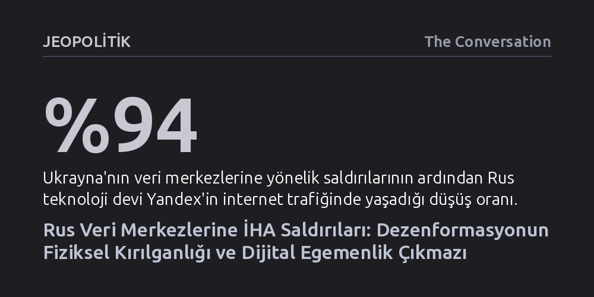

JEOPOLITIK · The Conversation · 2026-10-19
Ukrayna'nın Rus veri merkezlerine düzenlediği İHA saldırıları, dezenformasyon ağlarının kırılgan fiziksel altyapılara bağımlı olduğunu ortaya koydu. Moskova'nın veriyi ülke içine hapsetme ısrarı, uluslararası yedekleme imkânlarını ortadan kaldırarak Rusya'yı fiziksel darbelere karşı savunmasız bıraktı.
Dezenformasyon ve siber savaş tehditlerinin yalnızca sanal alemde kodlarla değil, hedef alınabilir somut binalara, sunucu raflarına ve elektrik hatlarına göbekten bağlı olduğunu gösterir.

Ukrayna ordusunun Rusya'nın en büyük finans ve teknoloji kuruluşu Sberbank'a ait devasa bir veri merkezini insansız hava araçlarıyla vurması, modern savaş tarihinde kritik bir eşiğin aşıldığını gösteriyor. Bu hamle, ülkenin arama motorundan haritaya, e-ticaretten taksi çağırmaya kadar tüm dijital yaşamını sırtlayan Yandex'e ait üç ayrı veri merkezine düzenlenen operasyonların hemen ardından geldi.
Saldırıların etkisi sanal alemde anında hissedildi; Yandex'in internet trafiğinde yüzde 94'lük devasa bir çöküş yaşandı ve Rus vatandaşlarının günlük dijital servisleri saatlerce felç oldu. Ukrayna Devlet Başkanı Volodimir Zelenski, operasyonların ardından Rus bot çiftliklerinin ve dezenformasyon mekanizmalarının ağır darbe aldığını belirterek birçok sosyal medya platformunda adeta "daha kolay nefes alındığını" dile getirdi. Her ne kadar bağımsız kaynaklar ve sonraki raporlar dezenformasyonun tamamen durduğu yönündeki bu iddiaya temkinli yaklaşsa da yaşananlar, dijital iletişim ağlarının fiziksel altyapıya olan sarsılmaz göbek bağını tüm çıplaklığıyla gözler önüne serdi.
Kamuoyu dezenformasyonu genellikle sosyal medya platformlarında dolaşıma sokulan sahte haberlerden ibaret sanır; hükümetler de yıllardır bu tehditle yalnızca içerikleri silerek veya gerçekleri teyit eden doğrulama mekanizmaları kurarak mücadele etmeye çalışır. Oysa etki operasyonları yalnızca yalan üretmez; asıl gayesi kurumları gayrimeşru göstermek, toplumun devlete ve demokratik süreçlere olan güvenini içten içe kemirmektir. Avustralya'daki Yerli Sesi referandumunda toplumun yapay kutuplaşmalarla bölünmesi veya Yeni Zelanda'da kadın siyasetçilere yöneltilen kadın düşmanı linç kampanyaları, bu etki ağlarının toplumsal fay hatlarını nasıl işlediğinin en somut örnekleridir.
Sivil toplumun bugüne dek geliştirdiği çürütme, önceden aşılama (prebunking) veya alaycı mizah gibi taktikler dezenformasyonun yalnızca tüketim aşamasına odaklanıyordu. Rusya'daki veri merkezlerine yapılan saldırılar ise bu operasyonların bir üretim ve dağıtım altyapısı olduğunu hatırlattı. Yüz binlerce sahte hesabı yöneten algoritmalar, üretken yapay zeka modelleri ve otomatik bot ağları havada asılı durmuyor; elektriğe, soğutma tesislerine, fiber kablolara ve betonarme binalara kapatılmış sunuculara ihtiyaç duyuyor. Fiziksel kaynağı vurmak, manipülasyonu daha kökünden budama potansiyeli taşıyor.
Ulusların kendi verileri ve teknolojik altyapıları üzerinde denetim sahibi olması ilk bakışta makul bir egemenlik arayışı gibi görünebilir. Ancak Moskova'nın son on yıldır bayraktarlığını yaptığı dijital egemenlik doktrini, interneti denetlemek, sansürü kurumsallaştırmak ve Rus yurttaşlarını küresel ağdan yalıtmak amacıyla kurgulanmıştı. 2015 yılında çıkarılan yerel veri depolama yasaları ve 2022'deki Ukrayna işgalinin ardından gelen uluslararası yaptırımlar, Rus bilişim sektörünün dünyaya entegre yedekleme ve felaket kurtarma imkânlarını tamamen yok etti.
Normal şartlarda büyük bulut bilişim altyapıları, tek bir tesis çökse dahi hizmetin aksamaması için kıtalararası yedeklilik ilkelerine göre tasarlanır. Nitekim yılın başlarında İran'ın Amerikan saldırılarına misilleme olarak Birleşik Arap Emirlikleri ve Bahreyn'deki Amazon Web Services (AWS) merkezlerini vurması, küresel devi dahi sarstı ve kalıcı veri kayıplarına yol açtı. Rusya ise yüzü aşkın veri merkezine sahip olmasına rağmen, küresel yedekleme ağlarından koptuğu için çok daha kırılgan durumda. İleri teknoloji yarı iletkenlerde Çin'e göbekten bağımlı olan Moskova'nın, vurulan kritik sunucuları yeniden inşa etmesi ve devreye alması aylar sürecek bir lojistik kabusa dönüşüyor.
Yaşananlar, dezenformasyonla ve hibrit savaş tehditleriyle mücadelede yeni yöntemlerin kapısını aralıyor. Rusya merkezli propaganda aygıtlarına ve Telegram gibi operasyonel zemin sağlayan platformlara yönelik yaptırımlar ile fiziksel ya da yasal sınırlamalar artık masada. Ancak daha önemlisi, Moskova'nın sözde egemenlik uğruna kendi sınırları içine hapsettiği dijital ekosistemin, askeri bir hedef haline geldiğinde nasıl savunmasız bir kapana dönüştüğü anlaşıldı.
Bu tablodan demokratik ülkelerin çıkarması gereken hayati ders açıktır: Gerçek dijital egemenlik, içe kapanarak ve dikey devlet kontrolü kurarak elde edilemez. Aksine; coğrafi olarak farklı ülkelere dağıtılmış esnek yedekleme mimarileri, şeffaf risk yönetimi kuralları ve kritik sistemleri ayakta tutacak çok uluslu stratejik ittifaklar inşa etmekten geçer. Veriyi tek bir coğrafi sınırın içine hapsetmek egemenlik değil, düşmanın tek bir vuruşla imha edebileceği toplu bir hedef yaratmaktır.